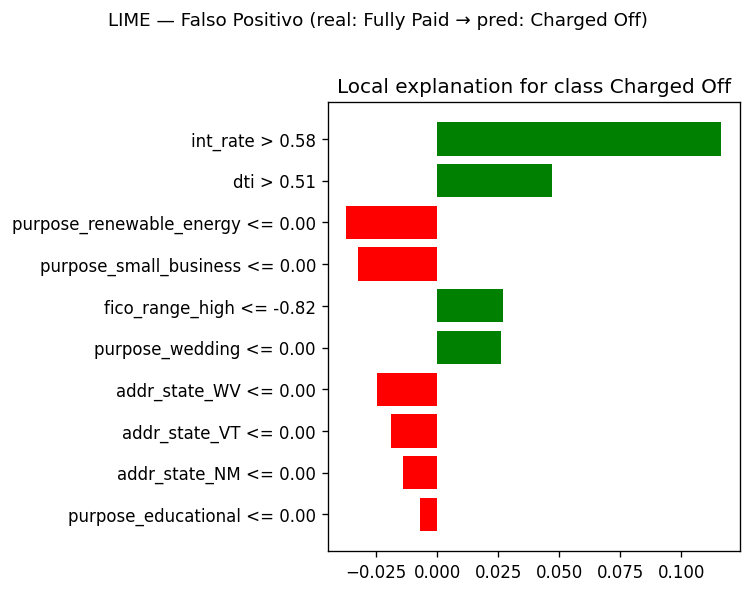
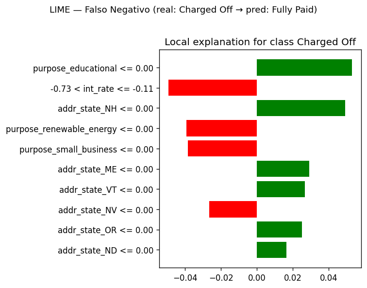
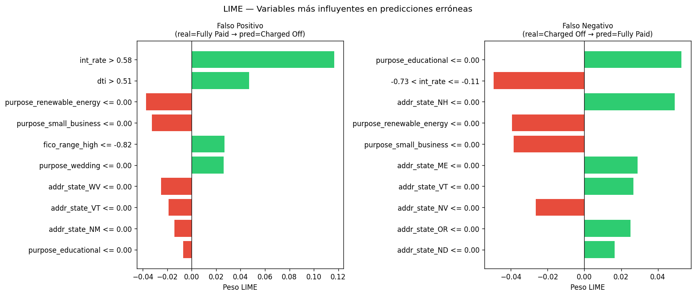

9. Interpretabilidad con LIME#
import lime
import lime.lime_tabular
import numpy as np
import matplotlib.pyplot as plt
import matplotlib
matplotlib.rcParams['figure.dpi'] = 120
# ── 1. Identificar instancias mal clasificadas ───────────────────────────────
y_pred_all = grid.predict(X_test_proc)
wrong_idx = np.where(y_pred_all != y_test.values)[0]
print(f"Total mal clasificadas: {len(wrong_idx)}")
# Seleccionar 2 instancias: un FP y un FN
fp_idx = wrong_idx[y_test.values[wrong_idx] == 0][0] # Fully Paid → pred Charged Off
fn_idx = wrong_idx[y_test.values[wrong_idx] == 1][0] # Charged Off → pred Fully Paid
# ── 2. LimeTabularExplainer ──────────────────────────────────────────────────
explainer = lime.lime_tabular.LimeTabularExplainer(
training_data = X_train_proc,
feature_names = all_feature_names,
class_names = ["Fully Paid", "Charged Off"],
mode = "classification",
discretize_continuous = True,
random_state = 42
)
# ── 3. Explicar FP (Falso Positivo) ─────────────────────────────────────────
exp_fp = explainer.explain_instance(
data_row = X_test_proc[fp_idx],
predict_fn = grid.predict_proba,
num_features = 10
)
print("\n══════════════════════════════════════════════")
print(" LIME — Falso Positivo (real=0, pred=1)")
print("══════════════════════════════════════════════")
print(f" Probabilidades : {grid.predict_proba(X_test_proc[[fp_idx]])[0]}")
fig_fp = exp_fp.as_pyplot_figure()
fig_fp.suptitle("LIME — Falso Positivo (real: Fully Paid → pred: Charged Off)",
fontsize=11, y=1.02)
plt.tight_layout()
plt.show()
# ── 4. Explicar FN (Falso Negativo) ─────────────────────────────────────────
exp_fn = explainer.explain_instance(
data_row = X_test_proc[fn_idx],
predict_fn = grid.predict_proba,
num_features = 10
)
print("\n══════════════════════════════════════════════")
print(" LIME — Falso Negativo (real=1, pred=0)")
print("══════════════════════════════════════════════")
print(f" Probabilidades : {grid.predict_proba(X_test_proc[[fn_idx]])[0]}")
fig_fn = exp_fn.as_pyplot_figure()
fig_fn.suptitle("LIME — Falso Negativo (real: Charged Off → pred: Fully Paid)",
fontsize=11, y=1.02)
plt.tight_layout()
plt.show()
# ── 5. Top features side-by-side ────────────────────────────────────────────
def plot_lime_bar(exp, title, ax):
features_vals = exp.as_list()
features_vals.sort(key=lambda x: abs(x[1]))
labels = [f[0] for f in features_vals]
weights = [f[1] for f in features_vals]
colors = ["#e74c3c" if w < 0 else "#2ecc71" for w in weights]
ax.barh(labels, weights, color=colors)
ax.axvline(0, color="black", linewidth=0.8)
ax.set_title(title, fontsize=10)
ax.set_xlabel("Peso LIME")
fig, axes = plt.subplots(1, 2, figsize=(14, 6))
plot_lime_bar(exp_fp, "Falso Positivo\n(real=Fully Paid → pred=Charged Off)", axes[0])
plot_lime_bar(exp_fn, "Falso Negativo\n(real=Charged Off → pred=Fully Paid)", axes[1])
plt.suptitle("LIME — Variables más influyentes en predicciones erróneas", fontsize=12)
plt.tight_layout()
plt.show()
Total mal clasificadas: 53609
══════════════════════════════════════════════
LIME — Falso Positivo (real=0, pred=1)
══════════════════════════════════════════════
Probabilidades : [0.4955473 0.5044527]

══════════════════════════════════════════════
LIME — Falso Negativo (real=1, pred=0)
══════════════════════════════════════════════
Probabilidades : [0.81283636 0.18716364]

